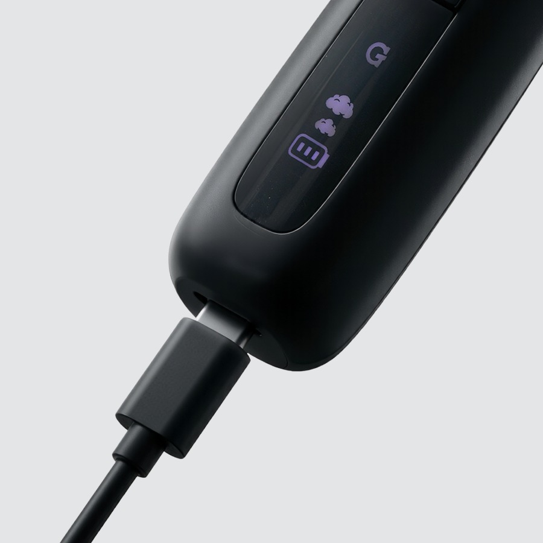
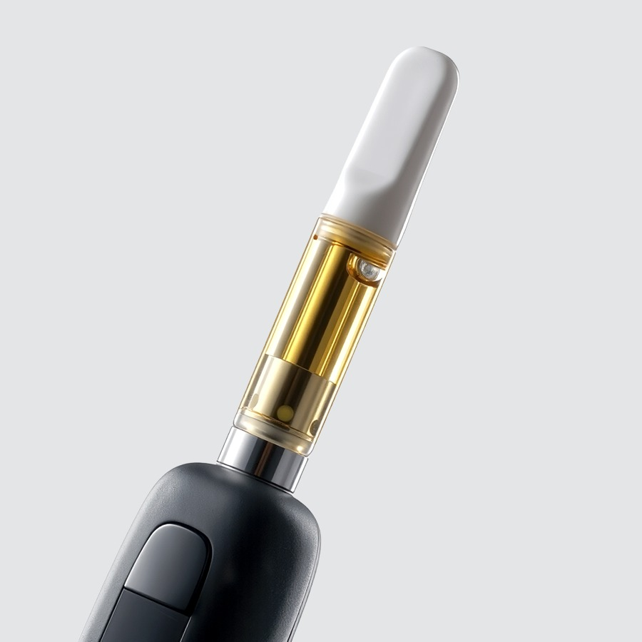
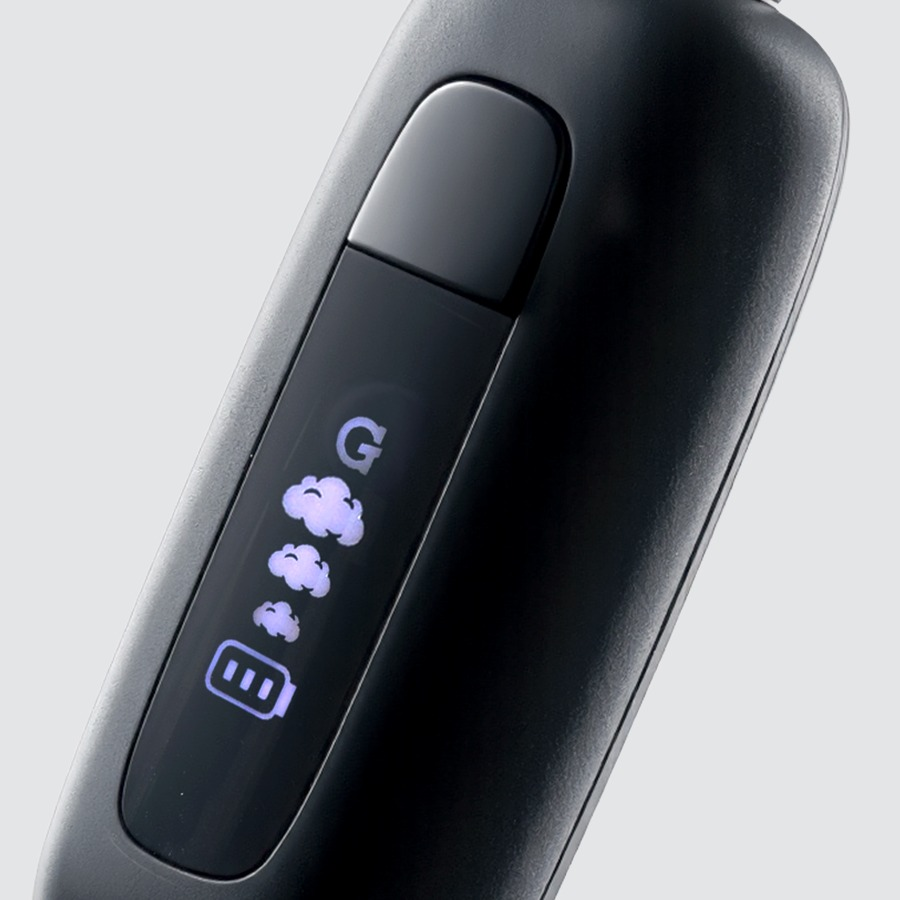
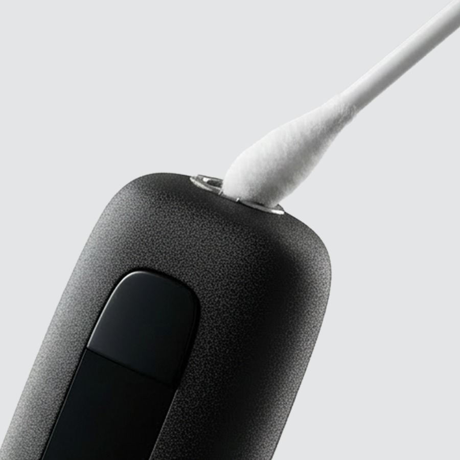

Using your
510 Original
Register your productHow to use
-

1Charge
- Plug any USB-C cable into the charging port.
- Pass-through charging: you can use it while it charges.
- Give it a full charge before first use.
USB-C cable not included.
-

2Load
- Screw in your 510 cartridge — snug, not cranked.
Fits standard 510-thread cartridges. Cartridge sold separately.
-

3Activate
5×Turn on Five quick presses3×Adjust voltage 1 cloud = 3.2V (low) · 2 = 3.6V (medium) · 3 = 3.8V (high)2×10-second preheat Warms oil at 1.8VholdActivate + draw Hold button or breathe in to activate5×Turn off Auto shut-off after 10 minutesLower voltage = more flavor. Higher = bigger clouds.
-

4Clean
- Turn it off and remove the cartridge first.
- Use a cotton swab + isopropyl alcohol (ISO).
- Clean the inside of the battery/cartridge connection point.
- Let dry fully before reloading.
Never soak the battery in alcohol or any liquid.
Videos
Upgrades
The 510 Original in retro see-through colors.


Specs
View Product Details
| Type | 510 Cartridge Battery |
|---|---|
| Battery | 400 mAh |
| Charging | USB-C |
| Voltage settings | 3 · 3.2V / 3.6V / 3.8V |
| Preheat | 1.8V · 10 seconds |
| Auto shut-off | 10 minutes |
| Compatibility | Standard 510-thread cartridges |
| Dimensions | 24 × 21.1 × 56.7 mm |
| Weight | 30 g |
| SKU | GSB-001-AOZZ |
| UPC | 811736029742 |
| Warranty | 90-Day Limited Warranty |
Help
Common questions
Nothing happens when I press the button
Press the button five times quickly to power the device on. The LED will light up to confirm it is on. If the LED still doesn't respond, charge the device and try again.
My cart isn't producing vapor
Make sure the cartridge is threaded in snugly — not over-tightened. Try double-pressing for a 10-second preheat to loosen thick oil, then hold the button or draw to activate.
Which voltage should I use?
Start at 3.2V for the most flavor-forward experience. Step up to 3.6V or 3.8V for bigger, warmer clouds. Press three times to cycle through the three settings.
Will my cartridge fit?
The 510 Original accepts standard 510-thread cartridges. Very wide or extra-tall carts may not fit flush.
What does the warranty cover?
The 510 Original comes with a 90-Day Limited Warranty. Register your device and read the full terms on gpen.com, or contact support with your order details.